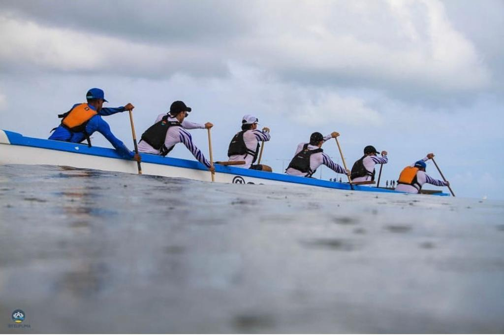

Daniel Gurgel, professor formado em nutrição, mestrado em patologia e doutorado em oncologia, que atualmente atua como professor de Biologia no IFCE-Campus Maranguape, além disso tudo, ele é uma pessoa muito boa, tem uma boa relação com seus alunos e repassa todo seu conhecimento para eles. Gosta muito de esportes e é um competidor nato em seu esporte praticante, o Remo.
